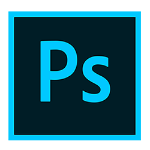

The History of
photoshop
-

1990
-
Photoshop 1.0
-
Color correction facility with balance, hue and saturation and Image Output Optimization was introduced also
-

1991
-
Photoshop 2.0
Fast Eddy
-
Slight changes like paths in which it furnishes with creation of line based drawings and thus it becomes easier in manipulating. And for this purpose Pen Tool was introduced, CMYK color mode support, Masking was introduced.
-

1994
-
Photoshop 3.0
Tiger Mountain
-
Layers and Tabbed palettes were introduced in this version which became an easy process in manipulating images.
-

1996
-
Photoshop 4.0
Big Electric Cat
-
Adjustment layers and macros were introduced in this version. They designed interface as the same like other Adobe Products.
-

1998
-
Photoshop 5.0
Strange Cargo
-
Undo command for multiple times, Managing color and Magnetic Lasso was introduced in this version.
-

2000
-
Photoshop 6.0
Venus in Furs
-
Vector shapes, Liquify Filter, Layer styles, Dialog box were added, User Interface was updated.
-

2002
-
Photoshop 7.0
Liquid Sky
-
Healing Brush tool was introduced, Designed Text in vector, And Photoshop file browser was first time introduced.
-

2003
-
Photoshop CS
Dark Matter
-
Color correction facility with balance, hue and saturation and Image Output Optimization was introduced also
-

2003
-
Photoshop CS2
Space Monkey
-
Camera RAW 2.x, Highly modified “Slice Toolâ€, Shadow/Highlight command, Match Color command, Lens Blur filter, Smart Guides, Real-Time Histogram was introduced in this version. A feature that detects and ignores images of banknotes was added.
-

2007
-
Photoshop CS3
Red Pill
-
Black-and-white conversion adjustment, Auto Align and Auto Blend, Smart (non-destructive) Filters, Mobile device graphic optimization was introduced in this version, Furnishes native support for Intel base Macintosh platform and improved support for Windows Vista, Revised user interface, alterations to Curves, Vanishing Point, Channel Mixer, Brightness and Contrast, and the Print dialog were also introduced. Features like cloning and healing were improved.
-

2008
-
Photoshop CS4
Stonehenge
-
New Adjustments window, Use dodge/burn without affecting other areas, Auto blend feature improved, Content aware cropping, Pixel grid for editing individual pixels, New Adjustments panel, New Masks panel, Content aware scaling, Extended depth of field , Fluid canvas rotation, Smoother panning, Smoother zooming, Support for colour-blind, 3D object painting, 3D object/property editing, 3D animation, 2D conversions to 3D, Volume rendering
-

2010
-
Photoshop CS5
Fast Eddy
-
Content Aware Fill, Intelligent selection technology, Advanced HDR processing, Improved raw processing, Extended painting effects, Localised Warp tool, Auto lens correction, Workspace management, Advanced 3D options (CS5 Extended), and 30 JDI (Just Do it) additions.
-

2012
-
Photoshop CS6
Superstition
-
UI redesign (all new icons and optional dark UI), Auto and background saves, Content-aware Patch and Move tools (extensions of content-aware fill introduced in previous version), Blur Gallery includes Tilt Shift, Iris and Field that can be used to create depth of field effects, Color Range: skin tone and face detection, Adobe Camera RAW 7, Enhanced crop tool with straighten option, New properties panel that can be used to vary properties of adjustment layers, Enhanced video support, Oil Paint filter now ships with the program, Adaptive Wide Angle filter, Paragraph and Character Styles, Built in support for Middle Eastern languages, Updated Printing UI, 3DLUT adjustment, Overhauled vector tools including stroking of vector paths, dotted or dashed, Snap to Pixel for vector tools and transforms, 3D UI completely redone, now easier to use, Last release for Windows XP SP3 and OS X Mountain Lion
-

2013
-
Photoshop CC
Lucky 7
-
Camera Shake Reduction, Former Extended features now always included, Intelligent Upsampling, Camera Raw as a filter, Editable rounded rectangles, Improved 3D painting, Share on Behance, Conditional Actions, System antialiasing style for type, Min and Max filter round kernel, Sync preferences with Cloud
-

2014
-
Photoshop CC2014
Single Malt Wiskey Cat
-
Perspective Warp, Linked smart objects, 3D Printing support, Publish 3D models on Sketchfab, Adobe Camera Raw 8.3, Blur Gallery motion effects, Focus Mask, Expanded Mercury Graphics Engine support, Smart Object improvements, Adobe Camera Raw 8 enhancements